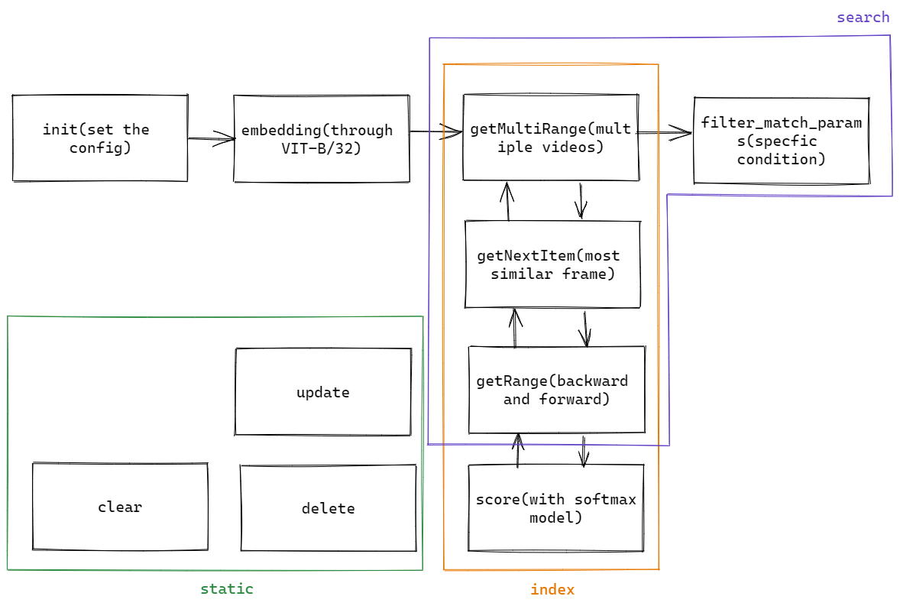

SimpleIndexer#
逻辑结构图#

基础实现#
注：Python教程按照代码顺序撰写，但是由于存在较为复杂的互相调用，建议结合逻辑结构图理解。
YAML配置#
jtype: SimpleIndexer
with:
match_args:
limit: $TOP_K
traversal_rdarray: 'c'
metas:
py_modules:
- executor.py
workspace: workspace/
limit即片段获取章节中的maxCount。
导入第三方库#
import inspect
import os
from typing import Dict, Optional
from jina import DocumentArray, Executor, requests
from jina.logging.logger import JinaLogger
import clip
from torch import Tensor
import torch
import time
inspect库用于获取对象信息，帮助校验类的内容。
类初始化#
基本概念理解：
Executor是Jina处理Document的载体
Flow是Jina使得Executor提效和缩放（可以使用于大规模数据）的工具
引入Executor的好处：
使不同基于DocumentArray的函数都可以遵从同一个配置状态（与OOP的思想相同）
让函数可以跟Flow适配
Flow中的Executor可以同时对多个DocumentArrays进行处理，并且能够快捷部署上云
可以被容器化，并通过
jina hub push/pull的方式实现共享
class SimpleIndexer(Executor):
FILE_NAME = 'index.db'
def __init__(
self,
pretrained_model_name_or_path: str = 'ViT-B/32',
match_args: Optional[Dict] = None,
table_name: str = 'simple_indexer_table2',
traversal_right: str = '@r',
traversal_left: str = '@r',
device: str = 'cpu',
**kwargs,
):
super().__init__(**kwargs)
参数解释：
pretrained_model_name_or_path：预训练的模型使用Vision Transformer-Base/32, input batch size为32*32，不同architecture参见下图
match_args：DocumentArray匹配函数的参数table_name：数据库表名traversal_right：索引对应DocumentArray默认的遍历路径traversal_left：搜索对应DocumentArray默认的遍历路径device：预处理设备
self._match_args = match_args or {}
self._index = DocumentArray(
storage='sqlite',
config={
'connection': os.path.join(self.workspace, SimpleIndexer.FILE_NAME),
'table_name': table_name,
},
)
self.logger = JinaLogger(self.metas.name)
self.default_traversal_right = traversal_right
self.default_traversal_left = traversal_left
self.pretrained_model_name_or_path = pretrained_model_name_or_path
self.device = device
model, preprocessor = clip.load(self.pretrained_model_name_or_path, device=device)
self.preprocessor = preprocessor
self.model = model
@property
def table_name(self) -> str:
return self._index._table_name
storage：存储数据库格式connection：database对应路径
创建索引#
@requests方法：
被装饰的方法在提供服务时被映射到网络端点上，与特殊网络请求相结合，并且需要对网络搜索做出响应
可选的参数
on=类似nodejs中的路由概念，将Executor中被装饰的方法与指定路径相绑定
@requests(on='/index')
def index(
self,
docs: 'DocumentArray',
**kwargs,
):
t1 = time.time()
if docs:
self._index.extend(docs)
t2 = time.time()
print(t2 - t1)
print(t1)
print(t2)
docs统一以DocumentArray的类型存储，并添加到索引之中。
神经搜索#
@requests(on='/search')
def search(
self,
docs: 'DocumentArray',
parameters: Optional[Dict] = None,
**kwargs,
):
match_args = (
{**self._match_args, **parameters}
if parameters is not None
else self._match_args
)
traversal_right = parameters.get(
'traversal_right', self.default_traversal_right
)
traversal_left = parameters.get('traversal_left', self.default_traversal_left)
match_args = SimpleIndexer._filter_match_params(docs, match_args)
# print('in indexer',docs[traversal_left].embeddings.shape, self._index[traversal_right])
texts: DocumentArray = docs[traversal_left]
stored_docs: DocumentArray = self._index[traversal_right]
对参数进行初始化，texts和stored_docs即为demo中输入的文字和被抽帧视频对应的图片。
doc_ids = parameters.get("doc_ids")
t1 = time.time()
with torch.inference_mode():
t1_00 = time.time()
for text in texts:
result = []
text_features = text.embedding
text.embedding = None
for sd in stored_docs:
if doc_ids is not None and sd.uri not in doc_ids:
continue
images_features = sd.embedding
print('images len',len(images_features))
t1_0 = time.time()
tensor_images_features = [Tensor(image_features) for image_features in images_features]
t1_1 = time.time()
对文本和图像分别进行embedding操作。
for i, image_features in enumerate(tensor_images_features):
tensor = image_features
probs = self.score(tensor, text_features)
result.append({
"score": probs[0][0],
"index": i,
"uri": sd.uri,
"id": sd.id
})
t1_2 = time.time()
print("tensor cost:", t1_1 - t1_0)
print("part score cost:", t1_2 - t1_1)
print(t1_0)
print(t1_1)
print(t1_2)
t2 = time.time()
print('score cost:', t2 - t1)
# print(parameters, type(parameters.get("thod")))
通过self.score计算文本和图片的匹配度，同时创建对应索引。
_list = self.getMultiRange(result,0.1 if parameters.get("thod") is None else parameters.get('thod') )
t3 = time.time()
print('range cost:', t3 - t2)
print(t1)
print(t1_00)
print(t2)
print(t3)
# print(index_list)
从getMultiRange中获取相似度阈值thod的取值。
docArr = DocumentArray.empty(len(index_list))
for i, doc in enumerate(docArr):
doc.tags["leftIndex"] = index_list[i]["leftIndex"]
doc.tags["rightIndex"] = index_list[i]["rightIndex"]
# print(index_list[i])
doc.tags["maxImageScore"] = float(index_list[i]["maxImage"]["score"])
doc.tags["uri"] = index_list[i]["maxImage"]["uri"]
doc.tags["maxIndex"] = index_list[i]["maxImage"]["index"]
# print(docArr)
text.matches = docArr
对每段文本分别进行匹配，得出对应关系最优的图像。
多个片段获取#
def getMultiRange(self, result: list, thod = 0.1, maxCount: int = 10):
ignore_range = {}
index_list = []
for i in range(maxCount):
maxItem = self.getNextMaxItem(result, ignore_range)
if maxItem is None:
break
# print(maxItem["score"])
leftIndex, rightIndex, maxImage = self.getRange(maxItem, result, thod, ignore_range)
index_list.append({
"leftIndex": leftIndex,
"rightIndex": rightIndex,
"maxImage": maxImage
})
if maxImage["uri"] in ignore_range:
ignore_range[maxImage["uri"]] += list(range(leftIndex, rightIndex + 1))
else:
ignore_range[maxImage["uri"]] = list(range(leftIndex, rightIndex + 1))
# print(ignore_range)
return index_list
此处返回maxCount即10个视频片段，因需要避免镜头重复出现，所以设置ignore_range，否则片段基本一致，只是前后错开几帧。
最大查找#
def getNextMaxItem(self, result: list, ignore_range: dict[list]):
maxItem = None
for item in result:
if item["uri"] in ignore_range and item["index"] in ignore_range[item["uri"]]:
continue
if maxItem is None:
maxItem = item
if item["score"] > maxItem["score"]:
maxItem = item
return maxItem
顺序遍历，有更大的就替换。
单一范围框定#
def getRange(self, maxItem, result: list, thod = 0.1, ignore_range: list[int] = None):
maxImageScore = maxItem["score"]
maxImageUri = maxItem["uri"]
maxIndex = maxItem["index"]
leftIndex = maxIndex
rightIndex = maxIndex
has_ignore_range = ignore_range is not None
d_result = list(filter(lambda x: x["uri"] == maxImageUri, result))
简单初始化与filter过滤条件设定.
for i in range(maxIndex):
prev_index = maxIndex - 1 - i
if has_ignore_range and prev_index in ignore_range:
break
# print(maxImageScore, thod, maxImageUri, maxIndex)
if d_result[prev_index]["score"] >= maxImageScore - thod:
leftIndex = prev_index
else:
break
for i in range(maxIndex+1, len(d_result)):
if has_ignore_range and i in ignore_range:
break
if d_result[i]["score"] >= maxImageScore - thod:
rightIndex = i
else:
break
从最相似的一帧图片分别向左右两侧延伸开去，这里的thod可以近似理解成导数，如相邻的两帧变化过大则不被纳入这一视频片段，调整变量可以使标准变严格或者宽松。
if (rightIndex - leftIndex) > 60:
return self.getRange(maxItem, result, thod/2, ignore_range)
return leftIndex, max(rightIndex, leftIndex + 10), d_result[maxIndex]
视频过长时将thod折半，相当于把纳入标准抬高，保证新的视频不长于上一片段，达到压缩的目的，同时通过max(rightIndex, leftIndex + 10)限制视频不超过10s。
匹配计算#
def score(self, image_features, text_features):
logit_scale = self.model.logit_scale.exp()
image_features = image_features / image_features.norm(dim=1, keepdim=True)
text_features = text_features / text_features.norm(dim=1, keepdim=True)
logits_per_image = logit_scale * image_features @ text_features.t()
probs = logits_per_image.softmax(dim=-1).cpu().detach().numpy()
return probs
对特征进行标准化，按照余弦相似度计算，最终通过softmax模型得出probability。
静态方法#
@staticmethod
def _filter_match_params(docs, match_args):
# get only those arguments that exist in .match
args = set(inspect.getfullargspec(docs.match).args)
args.discard('self')
match_args = {k: v for k, v in match_args.items() if k in args}
return match_args
字典key-value形式实现条件过滤。
@requests(on='/delete')
def delete(self, parameters: Dict, **kwargs):
deleted_ids = parameters.get('ids', [])
if len(deleted_ids) == 0:
return
del self._index[deleted_ids]
基本的删除操作。
@requests(on='/update')
def update(self, docs: DocumentArray, **kwargs):
for doc in docs:
try:
self._index[doc.id] = doc
except IndexError:
self.logger.warning(
f'cannot update doc {doc.id} as it does not exist in storage'
)
更新操作。
@requests(on='/fill_embedding')
def fill_embedding(self, docs: DocumentArray, **kwargs):
for doc in docs:
doc.embedding = self._index[doc.id].embedding
通过id获取embedding。
@requests(on='/clear')
def clear(self, **kwargs):
self._index.clear()
清空数据库操作。
进阶延展#
GPU引入及与CPU协同#
在进行Embedding的时候，通过.embed(..., device='cuda')来引入GPU（限制if torch.cuda.is_available()），同时如果DocumentArrary过大，可以使用.embed(..., batch_size=128)调整batch_size。
在深度学习应用场景下，经常会导入大量数据，这时需要在CPU上进行预处理，并通过GPU做训练。这时可以使用DocArray提供的dataloader()，通过分batch的方式并行化完成。

不妨看看官网给出的示例。假如现有一个.proto文件，压缩格式为tar.gz，我们可以通过如下的方式导入数据。(num_worker指线程数)
import time
from docarray import DocumentArray
def cpu_job(da):
time.sleep(2)
print('cpu job done')
return da
def gpu_job(da):
time.sleep(1)
print('gpu job done')
for da in DocumentArray.dataloader(
'da.protobuf.gz', func=cpu_job, batch_size=64, num_worker=4
):
gpu_job(da)
这样就可以在保证流程的情况下，避免几类问题：
数据量太大，内存溢出
CPU只有单核运行
CPU预处理较慢，导致GPU无法充分利用
须知流水线是遵从木桶原理的，因而需要保证有限的资源被合理地充分调度，并利用起来。
向量搜索#
源代码中选择了SQLite作为后端，在处理较大体量的数据时，读取、更新、删除、条件检索Document时均有良好的表现。（参见One Million Scale Benchmark）然而SQLite在向量搜索应用中并不理想，虽然表中的$Recall@10$达到了1.00，但是其底层逻辑是穷尽式，而非检索nearest neighbour，因而效率非常低。
Elastic Search在Recall这一任务中性能最优，同时作为分布式搜索和分析引擎，较为常见。因而笔者将结合Jina生态粗略讲述Elastic Search使用方法，详细内容参见ES-Jina文件夹。
YAML配置如下：
version: "3.7"
services:
elastic:
image: docker.elastic.co/elasticsearch/elasticsearch:8.1.0
environment:
- xpack.security.enabled=false
- discovery.type=single-node
ports:
- "9200:9200"
networks:
- elastic
networks:
elastic:
name: elastic
Jina Hub的使用#
这里简单给出两种通过docker调用的方式，只需要几行代码就可以实现（需要安装Kubernetes）：
Docarray Entrypoint
from docarray import Document, DocumentArray
da = DocumentArray([Document(text='hello')])
r = da.post('jinahub+docker://SimpleIndexer/latest')
print(r.to_json())
通过python SimpleIndexer-docarray-docker.py指令启动服务。
Jina Entrypoint
from jina import Flow
from docarray import Document, DocumentArray
f = Flow().add(uses='jinahub+docker://SimpleIndexer/latest')
with f:
r = f.post('/', inputs=DocumentArray([Document(text='hello')]))
print(r.to_json())
通过python SimpleIndexer-jina-docker.py指令启动服务。